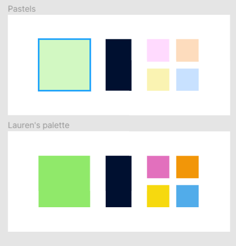
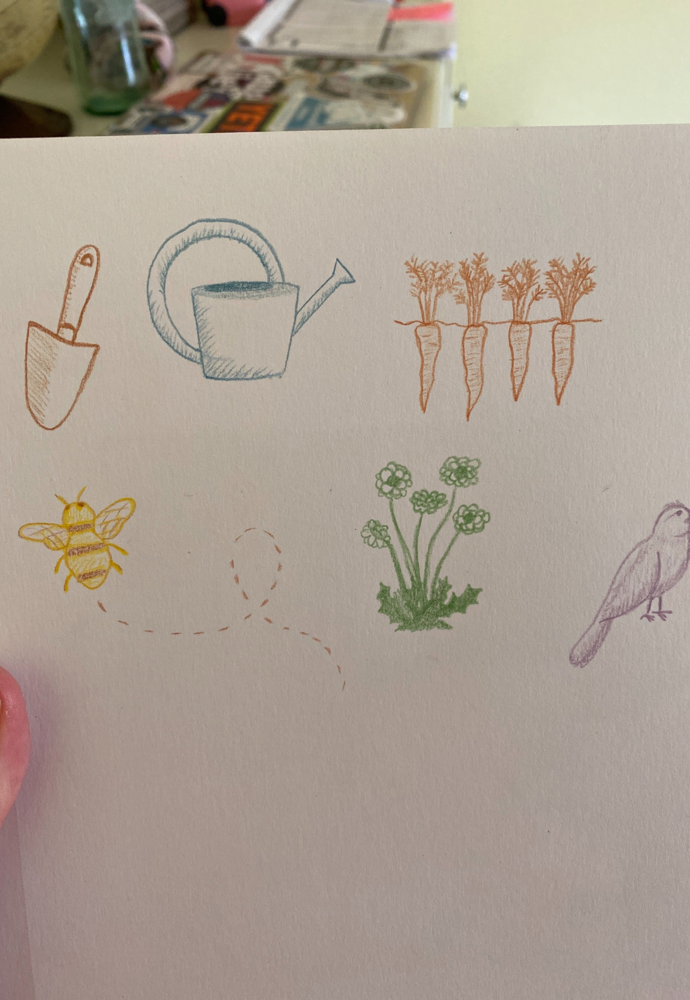

design process
The following is an example of a typical design process for me, using a website I made for a gardening club at my college.
gathering information
My co-designer and I first asked the club president for his thoughts on the club's identity, mission, and values. He reported that this club prided itself on being open, welcoming, and low-pressure.
On knowing this information, we had what we needed to start creating a new visual identity.
style guide
Before making the website, I created a style guide with my co-designer. We knew we wanted a colorful and playful look, while retaining a sense of organization through a degree of clean professionalism. That meant no cheesy textures, and we decided against a handwriting-esque font, opting instead for the slight personality of Stark (due to the student budget, we preferred to use public-use resources when possible).
My co-designer suggested a great color palette and made some preliminary sketches for our potential iconography. Right away, I made sure that the colors were W3-compliant for color-blindness accessibility. Then, we create tints of the original colors to round out our palette.
 